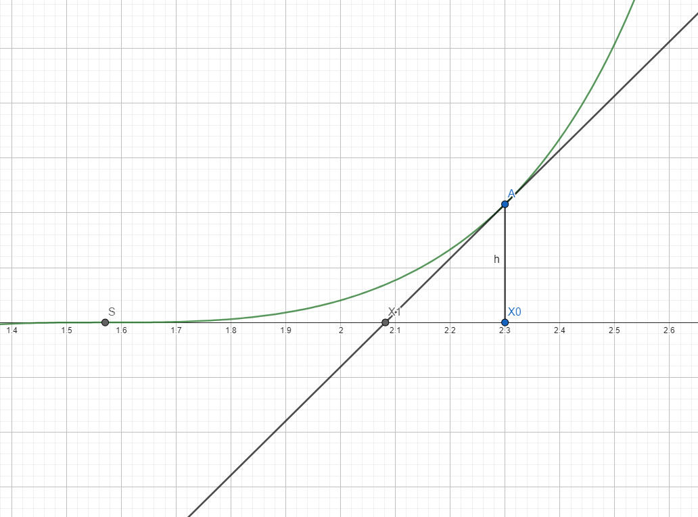

Topic 6 · Differentiation
Differential Calculus
From first principles to L'Hôpital, Newton–Raphson, Maclaurin series and differential equations.
§6.1Introduction
After introducing functions and their properties, we now delve into more advanced topics: derivatives proper (our discussion in the previous topic was solely for graphing), numerical methods that stem from the theory of derivatives, and finally differential equations and several methods of solving them. Only STEP covers differential equations, so students taking other exams may skip the final sections.
§6.2Derivatives
As we remember, derivatives are small changes over small distances: \(f'(x)=\lim_{h\to0}\frac{f(x+h)-f(x)}h\). Most of the time this definition won't be needed — only when proving a function is not differentiable, or when asked to find a derivative from first principles (i.e. straight from the definition).
- Calculate \(f(x)\) and \(f(x+h)\).
- Compute \(f(x+h)-f(x)\) and separate the terms involving \(h\) from those not involving \(h\).
- Divide by \(h\): terms still containing \(h\) tend to 0; if no terms contain \(\frac1h\), the derivative is the value of the terms not containing \(h\).
Example. Differentiate \(f(x)=x^2\) from first principles: \(f(x+h)-f(x)=2xh+h^2\); divided by \(h\) this is \(2x+h\); taking \(h\to0\), \(f'(x)=2x\).
In practice we build everything from the derivatives of elementary functions:
| Function | Derivative |
|---|---|
| \(x^n\) | \(nx^{n-1}\) |
| \(a^x\) | \(a^x\ln a\) |
| \(\sin x\) | \(\cos x\) |
| \(\cos x\) | \(-\sin x\) |
| \(\ln x\) | \(\dfrac1x\) |
§6.3Further derivative formulas
\((f+g)'(x)=f'(x)+g'(x)\); similarly \((f-g)'=f'-g'\).
\((fg)'(x)=f'(x)g(x)+f(x)g'(x)\).
Prove from first principles that \(\left(\dfrac1g\right)'(x)=\dfrac{-g'(x)}{g^2(x)}\).
\(\left(\dfrac fg\right)'(x)=\dfrac{f'(x)g(x)-f(x)g'(x)}{g^2(x)}\) — follows directly by combining the exercise with the product rule.
\(\big(f(g(x))\big)'=f'(g(x))\,g'(x)\), seen from \[\lim_{h\to0}\frac{f(g(x+h))-f(g(x))}h=\lim_{h\to0}\frac{f(g(x+h))-f(g(x))}{g(x+h)-g(x)}\cdot\frac{g(x+h)-g(x)}h.\]
The notation used so far is the Lagrange notation. In the Leibniz notation, \(f'(x)=\frac{\mathrm df}{\mathrm dx}\), and the rules read: \(\frac{\mathrm d(f+g)}{\mathrm dx}=\frac{\mathrm df}{\mathrm dx}+\frac{\mathrm dg}{\mathrm dx}\); \(\frac{\mathrm d(fg)}{\mathrm dx}=f\frac{\mathrm dg}{\mathrm dx}+g\frac{\mathrm df}{\mathrm dx}\); \(\frac{\mathrm df(g)}{\mathrm dx}=\frac{\mathrm df}{\mathrm dg}\frac{\mathrm dg}{\mathrm dx}\).
Example. Differentiate \(e^{\tan^2x}\). This is a composition of \(e^x\) with \(\tan^2x\): \[\left(e^{\tan^2x}\right)'=e^{\tan^2x}\left(\tan^2x\right)'=e^{\tan^2x}\cdot2\tan x\cdot\frac1{\cos^2x},\] using the chain rule twice and \((\tan x)'=\frac1{\cos^2x}\) — prove this and add it (and the derivative of \(\cot\)) to your list of important derivatives.
For the inverse function \(f^{-1}\) (the unique function with \(f(f^{-1}(x))=f^{-1}(f(x))=x\)): \[\left(f^{-1}\right)'(x)=\frac1{f'\!\left(f^{-1}(x)\right)}.\] Intuition: the graph of \(f^{-1}\) is the reflection of the graph of \(f\) through the line \(y=x\), and reflecting a tangent of slope \(t\) gives a tangent of slope \(\frac1t\).
§6.4L'Hôpital's rule
Graphing \(f(x)=\frac{\sin x}x\): it tends to 0 at infinity (since \(|\sin x|\le1\)), is even, and looks like a wave whose amplitude decays — like a wave hitting the shore. But what happens at \(x=0\), where it isn't defined? We need:
Let \(f,g\) be functions which are both \(0\) or both \(\pm\infty\) at the point \(c\). Then \[\lim_{x\to c}\frac{f(x)}{g(x)}=\frac{f'(c)}{g'(c)}\quad\text{if }\frac{f'(c)}{g'(c)}\text{ exists.}\] A stronger version replaces \(\frac{f'(c)}{g'(c)}\) by \(\lim_{x\to c}\frac{f'(x)}{g'(x)}\), useful when the value itself doesn't exist.
Example. \(\lim_{x\to0}\frac{\sin x}x\): the ratio of derivatives \(\frac{\cos x}1\) at \(x=0\) is 1, so by L'Hôpital the limit is 1.
§6.5Numerical methods
§6.5.1 Iterative methods
Elementary functions mostly "don't miss values": if defined on \([a,b]\), they take all values between \(\min(f(a),f(b))\) and \(\max(f(a),f(b))\) — this is Darboux's property (the intermediate value property). To locate a root of \(f(x)=0\), look for a sign change: for \(f(x)=e^x-3\), \(f(1)=e-3<0\) while \(f\!\left(\frac12\right)=\sqrt e\cdot e^{0} - 3\)… checking values shows the root lies between two points where the sign flips, and we can halve the interval repeatedly. To go faster:
§6.5.2 The Newton–Raphson method
Suppose \(f(x)=0\) has a solution \(s\) and the function is "well-behaved". Start from an approximation \(x_0\) and draw the tangent through \((x_0,f(x_0))\): \(y=f(x_0)+(x-x_0)f'(x_0)\). Intersecting the tangent with the \(x\)-axis lands closer to \(s\); the calculation (left to you) gives \(x_1=x_0-\frac{f(x_0)}{f'(x_0)}\).

Given \(f(x)=0\) and an initial approximation \(x_0\), iterate \[x_n=x_{n-1}-\frac{f(x_{n-1})}{f'(x_{n-1})}.\] Convergence is very fast — usually no more than 3 iterations are needed — but with multiple solutions, which one you reach depends entirely on \(x_0\).
§6.6Problems
Find one non-zero solution to the equation \(x=\tan x\).
Approximate \(\sqrt2\) by using the Newton–Raphson method on the equation \(x^2-2=0\), with a positive starting point of your choice.
Approximate the solution of \(x^2-4x+1=0\) by Newton–Raphson with starting point \(x_0=2\).
Approximate the solution of \(x^3-2=0\) by Newton–Raphson. Why can we be sure that we will always converge to the solution no matter what starting point we choose?
We know that one solution of \(x^2-5x=0\) is 0. How fast does Newton–Raphson converge to this solution?
§6.7Maclaurin and Taylor series
The tangent \(y=f(0)+xf'(0)\) is a rough approximation of \(f\) near 0. We can do much better. (This derivation uses integrals — return here after the Integration topic if needed.) From \(f(x)=f(0)+\int_0^xf'(x-y)\,\mathrm dy\), integrating by parts gives \(f(x)=f(0)+f'(0)x+\int_0^x y\,f''(x-y)\,\mathrm dy\), and inductively we obtain the infinite sum:
For an infinitely differentiable \(f:\mathbb R\to\mathbb R\), \[f(x)=f(0)+f'(0)x+f''(0)\frac{x^2}{2!}+\dots=\sum_{n=0}^{\infty}f^{(n)}(0)\frac{x^n}{n!}.\]
Expanding around \(x_0\) instead of 0: \[f(x)=\sum_{n=0}^{\infty}f^{(n)}(x_0)\frac{(x-x_0)^n}{n!}.\] For exams and interviews, the Maclaurin case is what matters.
- \(e^x=1+x+\frac{x^2}{2!}+\dots=\sum_{n\ge0}\frac{x^n}{n!}\)
- \(\sin x=x-\frac{x^3}{3!}+\frac{x^5}{5!}-\dots=\sum_{n\ge0}\frac{(-1)^n}{(2n+1)!}x^{2n+1}\)
- \(\cos x=1-\frac{x^2}{2!}+\frac{x^4}{4!}-\dots=\sum_{n\ge0}\frac{(-1)^n}{(2n)!}x^{2n}\)
- \(\ln(1+x)=x-\frac{x^2}2+\frac{x^3}3-\dots=\sum_{n\ge1}\frac{(-1)^{n+1}}nx^n\)
Notice the logarithm series is for \(\ln(1+x)\), not \(\ln x\) — the latter isn't defined at 0. Polynomials are their own Maclaurin expansions (apply the definition to small degrees to convince yourself). One last interesting series: \(\frac1{1-x}=1+x+x^2+\dots\) for \(-1<x<1\) — the convergent geometric sum from the Sequences topic is, in fact, a Maclaurin series; derive it from first principles and compare. Not every infinite sum is a Maclaurin series, but some hard problems consist precisely in recognising a sum as one (or as the derivative of one).
§6.8Differential equations
Equations involving a function \(y(x)\), some of its derivatives \(y^{(n)}\) (also written \(\frac{\mathrm d^ny}{\mathrm dx^n}\)), and the values of \(x\) — for instance \(y''+y=0\). The order of the equation is the degree of the highest derivative appearing.
§6.8.1 The characteristic equation
A dramatic statement to begin: most differential equations aren't solvable exactly — they have no closed solution, and numerical approximation is the norm. For our preparation we look at the ones that do. Start with \[y^{(n)}+a_{n-1}y^{(n-1)}+\dots+a_1y'+a_0y=0,\] with constant coefficients.
Observation 1. If \(y_1\) and \(y_2\) are solutions, so is \(y_1+y_2\) — by additivity of derivatives.
A famous theorem states a linear differential equation of order \(n\) has at most \(n\) linearly independent solutions (quantities \(a_1,\dots,a_n\) are linearly independent if no real \(b_1,\dots,b_n\), not all zero, give \(b_1a_1+\dots+b_na_n=0\); for functions this must hold for all \(x\)). So finding \(n\) independent solutions solves the equation. Guess \(y=e^{rx}\): substituting, \[e^{rx}\left(r^n+a_{n-1}r^{n-1}+\dots+a_0\right)=0,\] so \(r\) must solve a polynomial equation we know how to handle.
For \(a_ny^{(n)}+a_{n-1}y^{(n-1)}+\dots+a_0y=0\), the characteristic equation is \(a_nr^n+a_{n-1}r^{n-1}+\dots+a_0=0\). If its roots are real and \(r_i\) has multiplicity \(b_i\), the root contributes the independent solutions \(e^{r_ix},\,xe^{r_ix},\dots,x^{b_i-1}e^{r_ix}\), and the general solution is \(y=c_1f_1(x)+\dots+c_nf_n(x)\) over all such solutions \(f_j\), with real constants \(c_j\).
§6.8.2 Linear second order differential equations
For \(y''+a_1y'+a_0y=0\), the characteristic equation is \(r^2+a_1r+a_0=0\); compute the discriminant.
- \(\Delta>0\): roots \(r_1\ne r_2\); general solution \(y=c_1e^{r_1x}+c_2e^{r_2x}\).
- \(\Delta=0\): one root \(r_0\); general solution \(y=c_1e^{r_0x}+c_2xe^{r_0x}\).
- \(\Delta<0\): complex roots \(a\pm ib\) (see the Complex Numbers topic); general solution \(y=c_1e^{ax}\sin(bx)+c_2e^{ax}\cos(bx)\).
§6.9Problems
Find the solution of the equation \(y'+y=0\).
Find the solution of the equation \(y'-2y=0\).
Find the solution of the equation \(y''+2y'+y=0\).
Find the solution of the equation \(y''+6y'+10y=0\).
Find the solution of the equation \(y^{(3)}-4y^{(2)}+y'+6y=0\).
§6.10Equations with non-constant coefficients
We now look at equations of the form \(y'+p(x)y=q(x)\). Knowledge of integrals is required — go through the Integration topic first if needed.
§6.10.1 Separable equations
The simplest case: all instances of \(x\) separate from all instances of \(y\), in the form \(M(y)\frac{\mathrm dy}{\mathrm dx}=N(x)\). Integrating both sides with respect to \(x\) and substituting \(z=y\): \[\int M(y)\frac{\mathrm dy}{\mathrm dx}\,\mathrm dx=\int N(x)\,\mathrm dx \quad\Longrightarrow\quad \int M(z)\,\mathrm dz=\int N(x)\,\mathrm dx,\] an equation involving only \(x\) and \(y\), with no derivatives, which should be simple to solve in most cases.
§6.10.2 Order one equations with non-constant coefficients
For \(y'+p(x)y=q(x)\) with integrable \(p,q\), we use an integrating factor: \(m(x)=Ae^{\int p(x)\mathrm dx}\), chosen so that \(m'(x)=p(x)m(x)\). Multiplying the equation by \(m\), the left side becomes a derivative: \[\big(m(x)y(x)\big)'=q(x)m(x).\] Integrating, \(m(x)y(x)+C=\int q(x)m(x)\,\mathrm dx\), and so \[y(x)=\frac{\int e^{\int p(x)\mathrm dx}q(x)\,\mathrm dx+K}{e^{\int p(x)\mathrm dx}},\] with \(K\) a real constant. The idea generalises far beyond this type: whenever you have a differential equation, try to make one side the derivative of something — introducing an integrating factor lowers the order and simplifies the equation.
§6.10.3 Non-homogeneous equations
Equations \(y''+ay'+by=f(x)\) with non-zero right side are non-homogeneous (the version equal to 0 is the homogeneous one). If \(y_1,y_2\) are two solutions, subtracting their equations shows \(y_1-y_2\) solves the homogeneous equation — which justifies:
- Find the general solution of the homogeneous equation \(y''+ay'+by=0\).
- Based on the form of \(f(x)\), guess one particular solution — if \(f\) is exponential, try an exponential \(y\), and so on.
- The full solution is the sum of the general homogeneous solution and the particular solution.
Example. Solve \(y''+3y'+2y=e^x\). The characteristic equation \(r^2+3r+2=0\) has roots \(-1,-2\), so \(y_h=Ae^{-x}+Be^{-2x}\). Guess \(y_p=Ce^x\): substituting gives \(6Ce^x=e^x\), so \(C=\frac16\). The general solution is \[y=Ae^{-x}+Be^{-2x}+\frac{e^x}6.\]
§6.10.4 Differential equations solved with Maclaurin series
Observation. If \(y\) satisfies \(y^{(n)}+a_{n-1}(x)y^{(n-1)}+\dots+a_0(x)y=C(x)\) with infinitely differentiable coefficients, then \(y\) is infinitely differentiable too — rewrite the equation as \(y^{(n)}=C(x)-(a_{n-1}(x)y^{(n-1)}+\dots+a_0(x)y)\): the right side is built from differentiable pieces, so the left side is differentiable, and induction does the rest.
- Bring the equation to the structure above.
- Expand \(y=c_0+c_1x+c_2x^2+\dots\) as a Maclaurin series.
- For each power \(x^n\), find the values of the coefficients that satisfy the equation.
Example. Solve \(y'-y=0\) by series. With \(y=c_0+c_1x+c_2x^2+\dots\) and \(y'=c_1+2c_2x+3c_3x^2+\dots\), matching powers gives \(c_1=c_0\), \(2c_2=c_1\), and in general \(nc_n=c_{n-1}\), so \(c_n=\frac{c_0}{n!}\). Thus \[y=c_0\left(1+x+\frac{x^2}{2!}+\dots\right)=c_0e^x.\] In principle this method attacks any equation of the given form; in practice the coefficient equations may have no closed solution, in which case the method fails without computer assistance.
§6.11Dealing with constants
Always write down the most general solution — then use the constraints the exercise gives (e.g. \(y(x_0)=y_0\)) to pin the constants down.
- Write the equation in one of the forms above.
- Identify the type: linear with constant coefficients, separable, integrating-factor, non-homogeneous?
- Obtain the general solution.
- Find the constants from the constraints.
§6.12Problems
Find the solution of \(y''-y'=xe^x\).
Find the solution of \(y''-6y'+9y=\cos x\).
Find the solution of the equation \(\dfrac{\mathrm dy}{\mathrm dx}=\dfrac{2xy}{y^2+1}\).
Find the solution of the equation \(y''-y'=e^{-2x}(1+3\cos x+5\cos 2x)\). (Hint: use \(x\sin 2x\) in your ansatz.)
The equation of simple harmonic motion of an object of mass \(m\) on a spring of stiffness \(k\) is \(y''+\frac km y=0\). Find the equation of the motion, given that the object is initially at rest.
Suppose that \(y\) satisfies the differential equation \[y=x\frac{\mathrm dy}{\mathrm dx}-\cosh\!\left(\frac{\mathrm dy}{\mathrm dx}\right).\quad(*)\] By differentiating both sides of (*) with respect to \(x\), show that either \[\frac{\mathrm d^2y}{\mathrm dx^2}=0\quad\text{or}\quad x-\sinh\!\left(\frac{\mathrm dy}{\mathrm dx}\right)=0.\] Find the general solutions of each of these two equations. Determine the solutions of (*).
Sketch the graph of the function \(\ln x-\frac12x^2\). Show that the differential equation \[\frac{\mathrm dy}{\mathrm dx}=\frac{2xy}{x^2-1}\] describes a family of parabolas each of which passes through the points \((1,0)\) and \((-1,0)\) and has its vertex on the \(y\)-axis. Hence find the equation of the curve that passes through \((1,1)\) and intersects each of the above parabolas orthogonally. Sketch this curve. (Two curves intersect orthogonally if their tangents at the point of intersection are perpendicular.)
In the manufacture of Grandma's Home Made Ice-cream, chemicals A and B pour at constant rates \(a\) and \(b-a\) litres per second (\(0<a<b\)) into a mixing vat which mixes the chemicals rapidly and empties at a rate \(b\) litres per second into a second mixing vat. At time \(t=0\) the first vat contains \(K\) litres of chemical B only. Show that the volume \(V(t)\) of chemical A in the first vat is governed by \[\dot V(t)=-\frac{bV(t)}K+a,\] and that \(V(t)=\frac{aK}b\left(1-e^{-bt/K}\right)\) for \(t\ge0\). The second vat also mixes rapidly and empties at \(b\) litres per second. If at \(t=0\) it contains \(L\) litres of chemical C only (\(L\ne K\)), how many litres of chemical A will it contain at a later time \(t\)?
The function \(f\) satisfies \(f(x+1)=f(x)\) and \(f(x)>0\) for all \(x\).
(i) Give an example of such a function.
(ii) The function \(F\) satisfies \(\frac{\mathrm dF}{\mathrm dx}=f(x)\) and \(F(0)=0\). Show that \(F(n)=nF(1)\) for any positive integer \(n\).
(iii) Let \(y\) be the solution of \(\frac{\mathrm dy}{\mathrm dx}+f(x)y=0\) that satisfies \(y=1\) when \(x=0\). Show that \(y(n)\to0\) as \(n\to\infty\), where \(n=1,2,3,\dots\)
A pain-killing drug is injected into the bloodstream and diffuses into the brain, where it is absorbed. The quantities at time \(t\) in the blood and brain are \(y(t)\) and \(z(t)\), satisfying
\[\dot y=-2(y-z),\qquad \dot z=-\dot y-3z.\]
Obtain a second order differential equation for \(y\) and hence derive the solution
\[y=Ae^{-t}+Be^{-6t},\qquad z=\tfrac12Ae^{-t}-2Be^{-6t},\]
where \(A,B\) are arbitrary constants.
(i) Obtain the solution with \(z(0)=0\), \(y(0)=5\); call its brain quantity \(z_1(t)\).
(ii) Obtain the solution with \(z(0)=z(1)=c\) for a given constant \(c\); call its brain quantity \(z_2(t)\).
(iii) Show that for \(0\le t\le1\),
\[z_2(t)=\sum_{n=-\infty}^{0}z_1(t-n),\]
provided \(c\) takes a particular value that you should find.